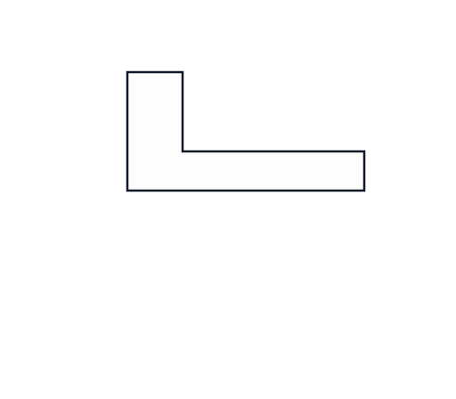
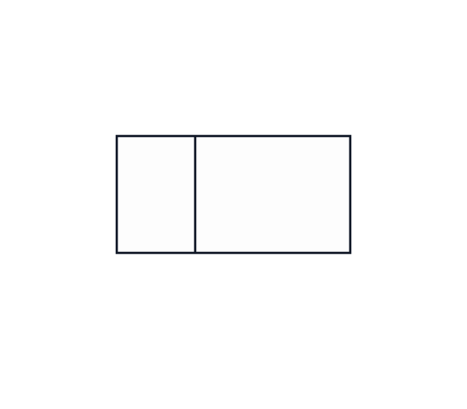
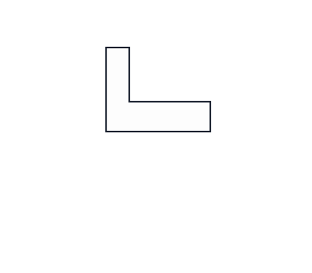

Learning Targets
- Explain the purpose of line conventions in engineering communication.
- Apply the lesson skill to a sketch, measurement, assembly, or documentation task.
- Record evidence clearly in the engineering notebook.
Focus question: How do different types of lines help engineers communicate clearly?
Use this page with the lesson presentation and your engineering notebook.
Another student could understand your design evidence without you explaining it out loud.
Think first, then be ready to share a short response that connects the lesson skill to real engineering work.
Line conventions reduce guessing by showing visible edges, hidden features, center locations, and symmetry consistently.
Line types are part of the language of engineering drawings.
Object, construction, hidden, center, and dimension lines each have a job.
Line weight helps readers tell planning marks from final design geometry.
Rotate the part, move to standard views, and compare how visible and hidden edges communicate its shape.
Compare each 2D projection with the interactive model. Use the buttons to align the 3D model with the matching standard view.



B — they tell the viewer what kind of feature each line represents.
Line conventions reduce guessing by showing visible edges, hidden features, center locations, and symmetry consistently.
Add or interpret object lines, hidden lines, and centerlines on a sketch or example part.
Record enough evidence that another person could understand what you did and why it matters.
Use the student-facing slides for the guided lesson, interactive checks, and exit ticket.
Return to the IED course hub for units, resources, certifications, and current course information.